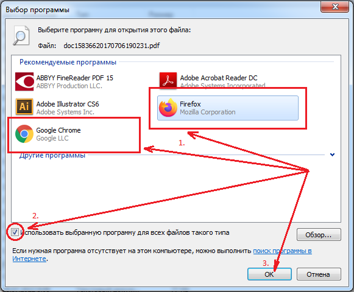

Часто задаваемые вопросы
Здесь вы можете посмотреть ответы на часто задаваемые вопросы о работ справочника, обновлении информации и фото
Навигатор
Меня нет в справочнике, что сделать, чтобы добавили
Передать информацию для добавления в справочник можно по контактам, указанным в разделе Техподдержка и через специальные формы в разделе Помощь.
Удобным для вас способом сообщите следующие данные:
- Ф.И.О.;
- должность;
- подразделение (отдел, цех)
- структурную единицу внутри подразделения, если есть (группа, сектор, бюро и т.д.);
- рабочий номер телефона;
- городской номер телефона, при наличии;
- сотовый номер телефона, при желании;
- где вас можно найти (корпус и кабинет).
Ваши данные будут добавлены в течение 3-х рабочих дней.
Как установить/поменять фото
Фото после фотографирования на пропуск поступают для добавления в справочник через бюро пропусков отдела контроля доступа. После получения фотографий техподдержка справочника добавляет их в течение 3-х рабочих дней.
Вы можете самостоятельно прислать фото по электронной почте сотрудникам, указанным в разделе Техподдержка, а также через специальные формы в разделе Помощь.
Получить свои фотографии вы можете у фотографа отдела технической документации.
Как добавить фотографию не из локальной сети предприятия
Чтобы узнать, как добавить в справочник фотографии с личных носителей за пределами предприятия, обратитесь к сотрудникам группы режима первого отдела.
Не работает справочник, что делать
Если какая-то из страниц справочника вдруг перестала работать, не перезагружайте ее. Попробуйте связаться с технической поддержкой.
Если не удалось дозвониться сделайте снимок экрана (скриншот) и напишите в поддержку справочника. В письме отразите следующую информацию:
- описание обстоятельств, которые могли привести к неработоспособности страницы;
- описание ошибок, которые вы заметили;
- прикрепите снимок экрана.
Как часто обновляются данные в справочнике
Данные сотрудников обновляются ежедневно на основании заявок, поступивших на электронную почту, через специальные формы из раздела Помощь и по телефону.
Версии в PDF и Excel обновляются в конце каждого месяца.
Отправляли заявку, в справоник не добавили (данные не изменили)
Если с момента оставления заявки прошло более 3-х рабочих дней, и вы не увидели изменений, продублируйте свою заявку другим способом. Возможно, информация не дошла до исполнителя.
Если отправляли письмо на электронную почту, попробуйте позвонить по телефонам, указанным в разделе Техподдержка. Если сообщили по телефону, попробуйте продублировать по электронной почте или через специалные формы.
У меня нет браузера Google Chrome или Mozilla FireFox
Для установки браузеров Google Chrome или Mozilla FireFox обратитесь в бюро информационной безопасности отдела СИТП ЦИТ.
Что сделать, чтобы справочник открывался в Google Chrome или Mozilla FireFox
Для того,чтобы справочник открывался в Google Chrome или Mozilla FireFox, выполните следующие шаги:
- откройте папку со справочником (Т:/Справочник);
- щелкните правой кнопкой мыши по значку справочника;
- в открывшемся контекстном меню выберите "Открыть с помощью";
- в подменю выберите "Выбрать программу...";
- в открывшемся окне выберите браузер;
- отметьте галочкой пункт "Использовать выбранную программу для всех файлов такого типа";
- нажмите "ОК".

Если в окне выбора программы нет указанных браузеров, обратитесь в бюро информационной безопасности отдела СИТП ЦИТ.
Что означают буквы "э" и "к" в рабочем номере телефона
На территории предприятия на текущий момент работают две телефонных станции (АТС) – "Эпотел" и "Квант". Буквы "э" и "к" являются сокращенным обозначением АТС "Эпотел" и АТС "Квант" соответственно.
Чтобы позвонить на телефон с АТС "Эпотел" на АТС "Квант" наберите 8, а затем номер абонента (например, 8-28-67).
Чтобы позвонить на телефон с АТС "Квант" на АТС "Эпотел" наберите 5, а затем номер абонента (например, 5-06-66).